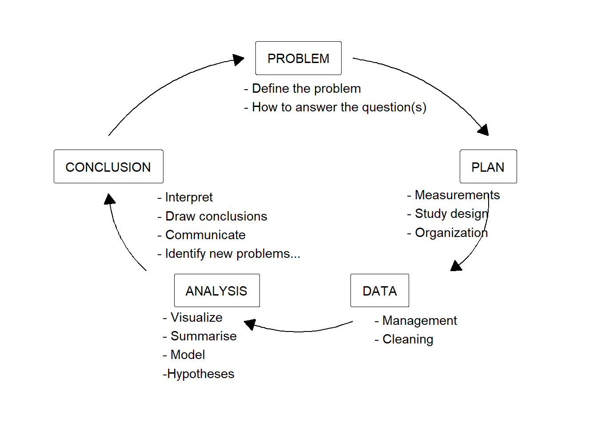
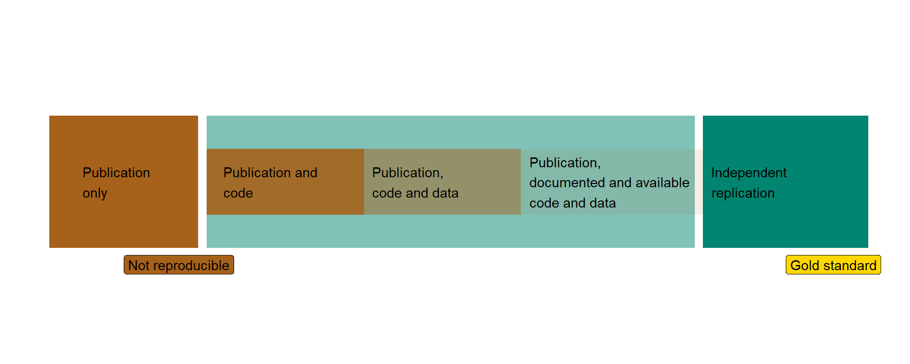

5 Reproducible reports
5.1 The research process and reproducible science
The research process can be viewed as cyclic (Spiegelhalter 2019) Figure 5.1. A problem is defined based on previous observations. The problem lets us specify specific questions and determine the way forward. Planning a study involves determining the necessary data to collect (measurements), the context in which data collection will occur (study design), and the method for achieving this (organization). Once data has been collected, we need to manage it. This step includes making sure that the data is ready for analysis (stored in suitable formats) and that it is of good quality (variables are documented).
The following step, analysis, is probably what most students think about when we talk about statistics. In this step, we prepare to draw conclusions from the data. Oftentimes, this step contains a basic set of activities, including exploratory analysis, statistical modelling, and hypothesis tests. When an analysis is complete, we often have statistical results that let us draw conclusions. Here, we aim to frame the results in a larger context and define what we have learned from our research. This new knowledge can form the basis for new questions Figure 5.1.
Warning in annotate("label", x = 0.5, y = 0.9, label = "PROBLEM", label.size =
1, : Ignoring unknown parameters: `label.size`Warning in annotate("label", x = 0.85, y = 0.62, label = "PLAN", label.size =
1, : Ignoring unknown parameters: `label.size`Warning in annotate("label", x = 0.65, y = 0.3, label = "DATA", label.size = 1,
: Ignoring unknown parameters: `label.size`Warning in annotate("label", x = 0.35, y = 0.3, label = "ANALYSIS", label.size
= 1, : Ignoring unknown parameters: `label.size`Warning in annotate("label", x = 0.15, y = 0.62, label = "CONCLUSION",
label.size = 1, : Ignoring unknown parameters: `label.size`
Debates about statistics in scientific research regularly concern the data analysis step, with the rest of the research cycle often being taken for granted (Leek and Peng 2015). It turns out that scientific results are not readily reproducible, meaning that the conclusions from a scientific study cannot be confirmed in follow-up studies. The reasons for this are, in part, a false belief in the robustness of statistical methods to separate actual effects from bias (Ioannidis 2005). Maybe the most debated part of statistics is the use of p-values to draw inference (see e.g., Wasserstein, Schirm, and Lazar 2019; McShane et al. 2019). A key concern for opponents of the p-value is that uncritical implementation leads to unreliable conclusions. The proponents of the use of p-values, however, argue that if the p-values are used as designed, research results would be more reliable (see e.g., Lakens 2021).
Parallel to discussions about statistical methods for hypothesis testing and modelling, the scientific community has developed tools for reproducible data analysis. This is a topic that is much less debated than, for example, the p-value, despite its importance for transparent and reproducible science (Leek and Peng 2015). Reproducible data analysis means that results from an analysis can be recalculated to the same results using the same data and code by independent analysts. This requires that both data and code are documented and shared from the original analysis (Peng 2011; Peng, Dominici, and Zeger 2006). When we aim for reproducible data analysis, it is therefore necessary to work with tools that enable us to document analyses and data together with the conclusions drawn in a report. Ideally, all aspects of the research process is part of a reproducible workflow.

5.2 Reproducible data analysis, the main ingredients
The degree to which research is reproducible is determined by the availability of the data, computer code and software used to analyse the data, and descriptions of how to understand the purpose of the code.
To make these ingredients even tastier, we could store them together in a format that is easy to share with others. Using the tools we discuss in this course, we can think of data analysis projects as self-contained projects with all necessary ingredients. In more advanced settings, we might also adopt version control software and collaboration platforms that make it easy to trace changes made to the data analysis.
5.2.1 Documenting the data
As a minimum standard, data should be documented. This can be achieved using a data dictionary. A data dictionary contains a description of all variables used for data analysis. Descriptions should include information on the unit of measurement, how the measurement was done, and the reasons for missing observations. If data were aggregated before analysis, the aggregation method should also be described with reference to the raw data. The documentation of the data should be stored close to the data and updated as new data or variables are added to the analysis. The data dictionary could, for example, be part of a README file stored in a project folder.
5.2.2 Documenting an analysis
Ideally, a data analysis is written as a computer program. We instruct the computer on what to do, and it uses the necessary software to execute the analysis. Together with the computer code, we can add descriptions of the background and the purpose of the code. Together, this allows for scrutiny of the analysis by enabling reproducibility.
5.2.3 Self-containment and sharing
A reproducible data analysis is self-contained. This means that all ingredients for the analysis are packaged together. Often, this means that an analysis is stored in a single folder containing the data, code, or software used to analyze the data, and reports that describe the background, purpose, and results of the data analysis. With instructions, the folder can be used to reproduce analyses on an independent computer, making the analysis reproducible.
5.3 Tools for reproducible research
5.3.1 JASP
JASP is a free software designed for convenient access to modern statistical routines. JASP uses R, an open-source, community-driven statistical programming language for most analyses (Wagenmakers et al. 2023), making it a powerful and flexible graphical user interface for statistical analysis. All analyses in JASP are fully reproducible as JASP stores data, selected analysis options, and annotation in a single file (.jasp file format) (Wagenmakers et al. 2023).
Using JASP as part of a self-contained data analysis may include keeping track of multiple JASP files in your folder, as the data format restricts the combination of unrelated data sets. When data are subdivided between different data sets, a README file can describe how they are related to the overall project.
The JASP user interface contains a combined output and annotation panel. This means that all analyses are annotatable, making it easy to include notes on the purpose of analyses and the interpretation of the results. However, output from a JASP file may not be directly suitable for including in a report. This means that post-processing is needed to compile reports. Numerical results may need to be copied to reports (written in other software), and figures may require some editing before being added to the report. These steps make the resulting reports less reproducible. To avoid copy-paste mistakes, such activities should be documented in the project README file.
5.3.2 R
The R ecosystem is at the forefront of reproducible statistical programming. Several tools have been developed, making it easy to create fully reproducible reports using R as the primary language for analysis. Quarto is the most recent development for reproducible reports, providing a file format for scripted data analysis that can combine analytic code with text to produce output reports that include data, figures, and tables.
In complex analyses, version control software helps maintain the project’s integrity by tracking changes to all files in a project repository. git, together with the online collaborative platform GitHub, makes it possible to collaborate in the creation of reproducible data analyses. Working on a version-controlled repository naturally makes the project self-contained.
Using R in data analysis requires the additional effort of learning how to program. The benefits of programming an analysis are however, substantial in terms of reproducibility and flexibility.
Read more about the tools needed for a reproducible workflow here (An R Crash Course).